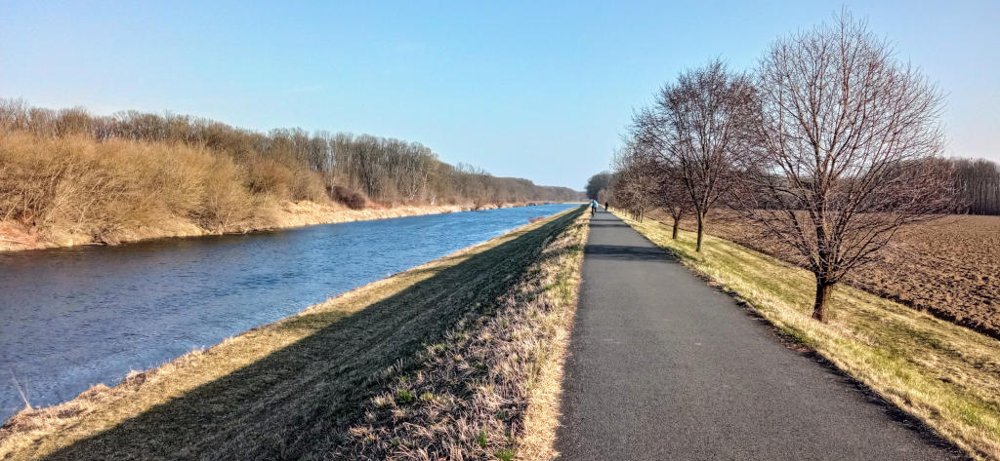
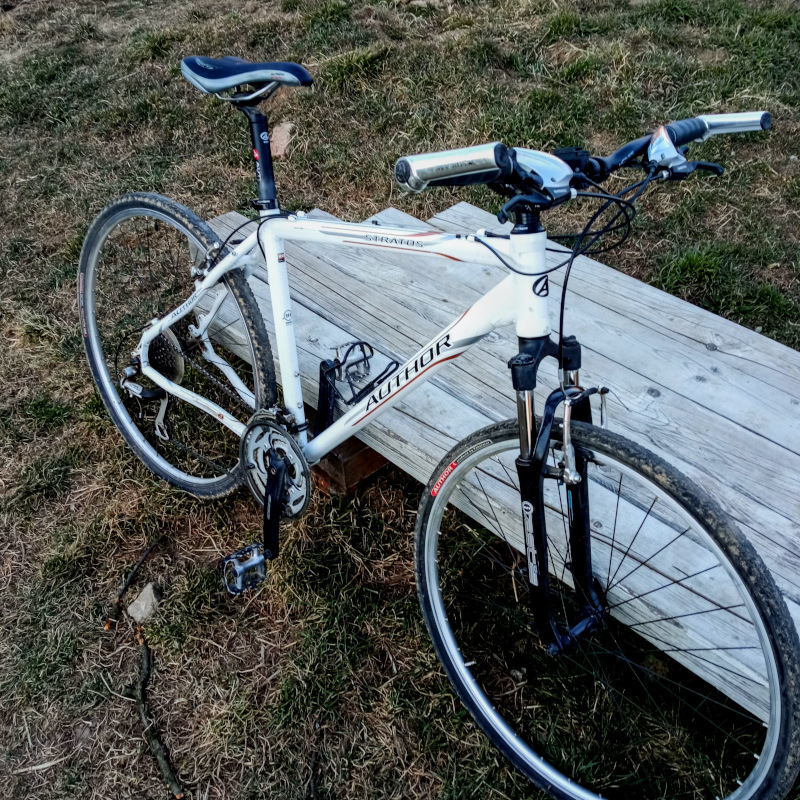
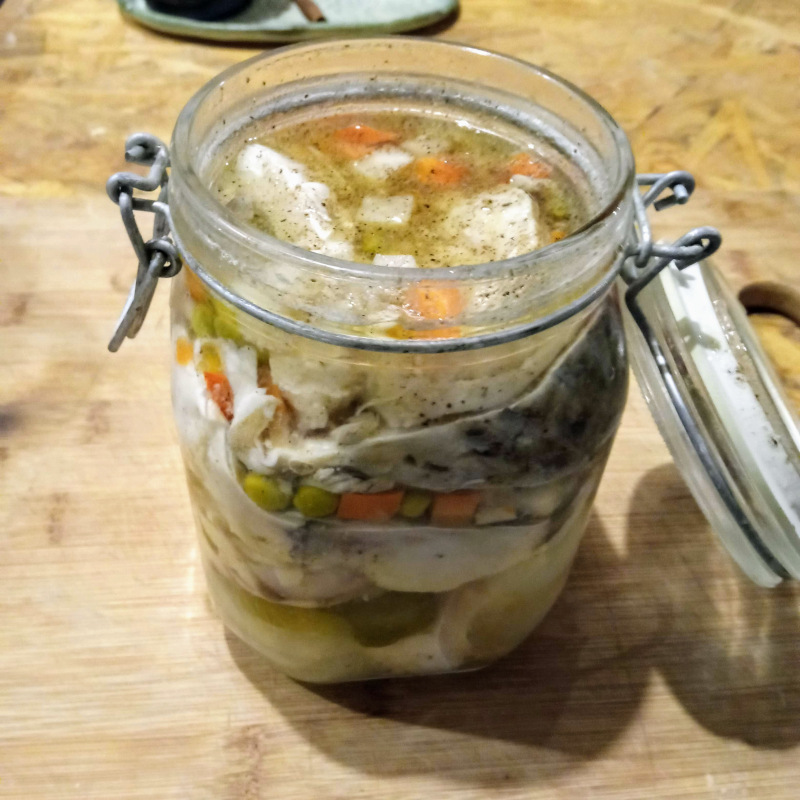

Co se v turbulentním březnu povedlo

Když soustředím pozornost jen na dění okolo našeho domu, zahrady a sebe samého, pokračoval březen v podobném duchu, jako konec února - víc optimisticky.
Jasný, máme tu teď různé geopolitické události, ale pokud člověk nechce, zase tak moc to sem nedoléhá. Ale samozřejmě jsem začal víc řešit otázku naší resilience, vůči válečným událostem, kdo to neřeší…, a můžu říct, že není moc dobrá. Takže jsme doma zřídili malou "válečnou" zásobu jídla a hygienických prostředků, máme také malé rádio na baterky atd. Co nám zatím chybí je nějaký prostředek na uchování vody - kanystry.
Náš dům není napojen na plynovou distribuční síť, což se nyní ukázalo jako výhoda. Místo zemního plynu máme LPG, které se ale dá koupit do zásoby. Jak říkám, z hlediska resilience na tom nejsme nic moc, ale asi pořád lépe, než někde ve městě v paneláku.
Celkově současnou turbulentní dobu pociťujeme především v růstu cen téměř všeho, hlavně stavebního materiálu. V podstatě máme štěstí, že jsme stihli dům jakžtakž dokončit ještě před Covidem. Mám dojem, že teď už bychom to nezvládli. No nezvládli - asi bychom to zvládli, ale jen v hodně skromnější podobě.

Osobně si myslím, že celkový růst cen všeho se projeví také na životním stylu lidí. A víte co? Já si myslím, že někdy i dobře. Už teď lidi míň jezdí autem. Víc se asi taky začne vyplácet určité samozásobitelství. A to se na lontě realizuje lépe, než někde ve městě (i když tam to jde taky).
Ještě teda dodávám, že tím samozásobitelstvím myslím hlavně produkci potravin s větší přidanou hodnotou ze základních surovin. Nebudu ani nemůžu pěstovat pšenici nebo chovat krávu. Každopádně si lidi asi víc začnou vážit potravin. A kdo bude mít depku z toho, že nemá na provoz velkýho auta a nejnovější ajfoun, dobře mu tak. Prostě postmaterialismus no…
A jak se to projevuje u nás?
- Víc jezdím na kole - benzín je drahý. Jedna cesta na kole do města mi ušetří cca 50 Kč, navíc si zasportuju. Když se mi moc nechce šlapat, máme elektrokolo.
- Samozásobitelství - chceme víc produkovat potraviny. Chleba si peču sám, umíme dělat kefír, který nám nahrazuje kupované jogurty. V plánu mám nakládat okurky a zelí. Ještě by to chtělo nějak vymyslet vhodnou technologii sušení skladování masa - sušení? Ale stejně chci časem přejít víceméně na bezmasou stravu (maso maximálně jednou týdně). Vejminek se promění ve sklad potravin - brambory nám dlouho vydržely, jablka také. Pokud by se povedlo udělat pár desítek litrů cideru, v podstatě bych celý podzim skoro nemusel pít pivo.
- Na domě pracujeme svépomocí - už to prostě jinak nejde. Omítky v dětském pokoji jsou téměř hotové, teď začínáme řešit podlahu.
- Méně chodím do restaurací - tohle u mě už dost zastavil covid. Nedávno jsem byl s kolegy v několika cool brněnských hospodách a opět mě to utvrdilo v tom, že není zase tak o co stát - nic moc jídlo, ale drahé, nic moc pivo, ale drahé. Ale s D. občas zajdeme do kavárny nebo do sauny. Do kavárny občas bereme i děti.

Zahrada:
- Česnek spokojeně roste
- Zasel jsem hrách, lahůdkovou cibuli, ředkvičky a petržel.
- Budu ještě pokračovat se sadbou další cibule, mrkve a petržele
- Až bude tepleji, tak ještě dýně, fazole a rajčata.
- Po hrachu ředkvičky a ředkve.
- Rozkvetly meruňky, dokonce na nich létaly včely, tak snad přežijí výkyvy počasí...
- Pokusně zasadím také brambory.